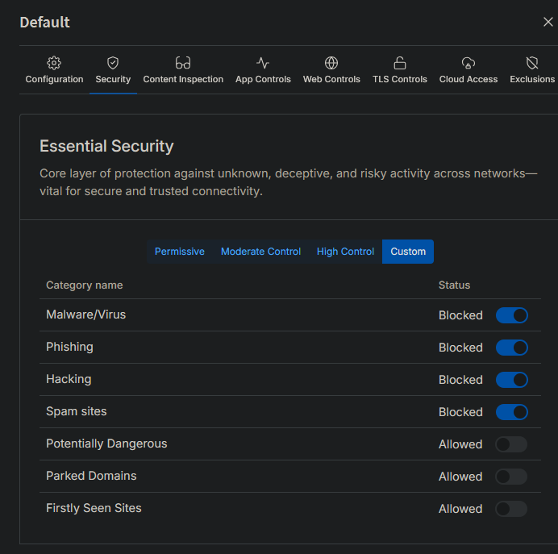
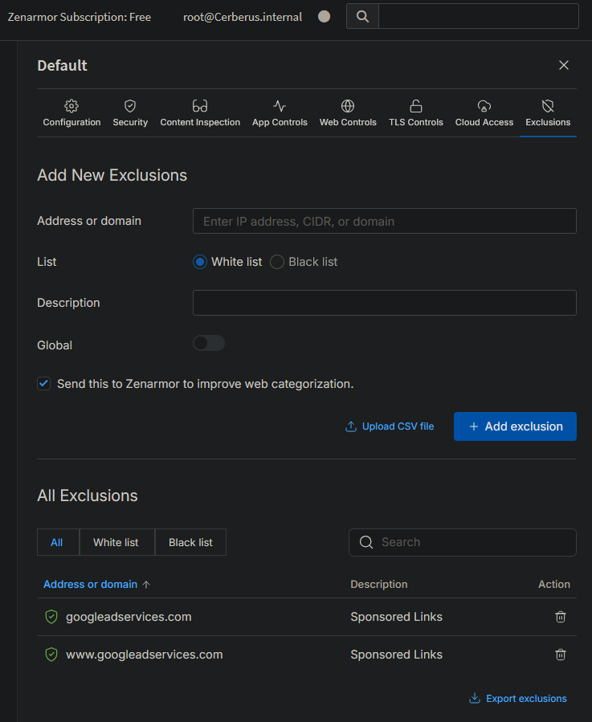

Dual-Homed Firewall & DNS Filter
TOOLS: OPNsense, Zenarmor, Unbound DNS, Wazuh
1. The Objective
The goal was to move beyond standard ISP security by building a custom perimeter firewall. I needed granular control over traffic to simulate an enterprise edge network, including Deep Packet Inspection (DPI) and intrusion detection.

Figure 1: System Status verifying dual-homed interfaces (WAN/LAN) and service uptime.
2. Implementation Details
Phase 1: DNS Sinkholing. Before traffic even hits the firewall rules, I configured Unbound DNS to filter malicious domains. This prevents devices from resolving known malware command-and-control (C2) servers.

Phase 2: Application Control. Using Zenarmor, I created strict policies to block specific application categories including Ads, Trackers, and Adult Content to sanitize network traffic.
Phase 3: SIEM Integration. To centralize monitoring, I configured OPNsense to forward syslog events to my Wazuh manager. This allowed me to correlate network edge blocks with internal endpoint alerts in a single pane of glass.
3. Challenges & Resolutions
Initially, the strict Zenarmor policies blocked legitimate internet browsing, streaming, and shopping sites. I analyzed the live logs, identified the false positives, and created specific whitelist exceptions based on the destination domains.
Figure 4: Creating exclusions for legitimate business services.
4. Operational Impact
Achieved total visibility of network traffic. The system now actively blocks thousands of tracking attempts and malicious advertisements daily, reducing the attack surface for all endpoints.
Threat Intelligence Dashboard
Live Traffic Analysis